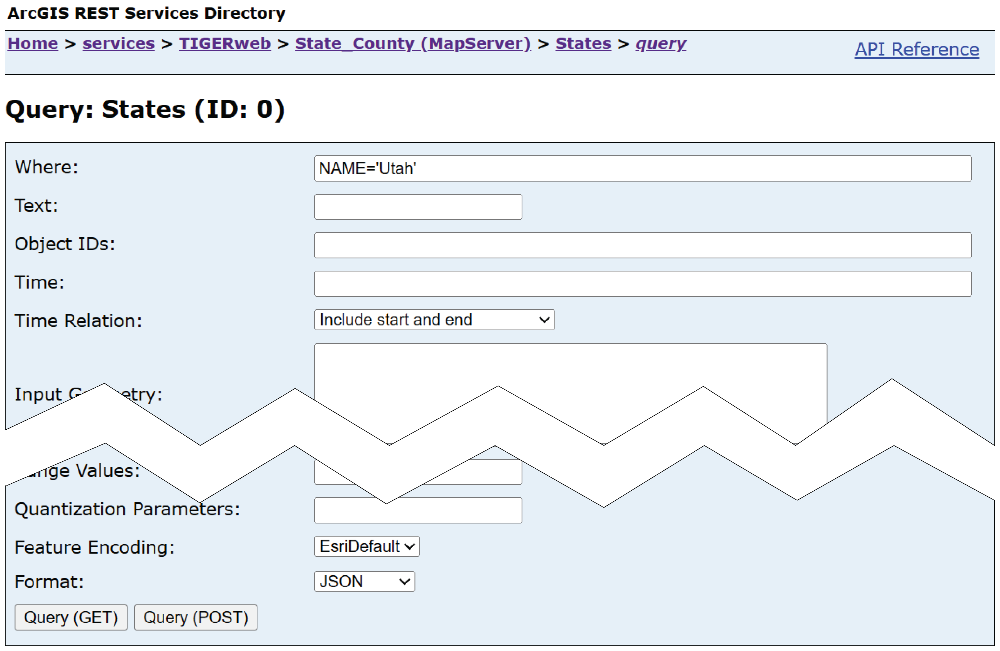

library(httr2)
url <- file.path(
"https://tigerweb.geo.census.gov",
"arcgis/rest/services/TIGERweb/State_County/MapServer/0"
)
url_parse(url)
#> <httr2_url> https://tigerweb.geo.census.gov/arcgis/rest/services/TIGERweb/State_County/MapServer/0
#> * scheme: https
#> * hostname: tigerweb.geo.census.gov
#> * path: /arcgis/rest/services/TIGERweb/State_County/MapServer/0Working with REST APIs to access spatial data
SUDS Workshop
2025-10-21
REST API?
HTTP methods
Today’s focus
URL components
Building queries
arcgislayers
the core data access package in the R-ArcGIS Bridge, providing a unified interface for working with ArcGIS data services. As part of the arcgis metapackage, it enables seamless integration between R and the ArcGIS Web GIS ecosystem, including ArcGIS Online, Enterprise, and Location Platform.
Intuition Pumps
AGOL query in the browser
Get US Census TIGER/line data
AGOL query in the browser
Return GeoJSON
AGOL query in the browser
Read to simple feature

arcgislayers in R
Get US Census TIGER/line data
Querying a <FeatureLayer> returns sf
utah[c("STATE", "NAME")]
#> Simple feature collection with 1 feature and 2 fields
#> Geometry type: POLYGON
#> Dimension: XY
#> Bounding box: xmin: -12696310 ymin: 4438780 xmax: -12138450 ymax: 5161234
#> Projected CRS: WGS 84 / Pseudo-Mercator
#> STATE NAME geometry
#> 1 49 Utah POLYGON ((-12412992 5160912...Why care?
Focus on remote access…
- makes data used for research more accessible,
- shifts effort from data management to data processing,
- reduces the need for costly data duplication,
- supports collaborative research, and
- promotes reproducibility.
Only the source() is real!
But sharing the R script is basically sharing the data,
since getting the data is as simple as source("salt-lake.R")*.
* There are always trade-offs…
But also money!
Arguments to arc_select()
When we pass query parameters, arc_select() helps us build a url query string and then sends that request to the service endpoint.
fields for column selection
# available fields at this service endpoint
list_fields(service)[["name"]]
#> [1] "MTFCC" "OID" "GEOID" "STATE" "STATENS"
#> [6] "BASENAME" "NAME" "LSADC" "FUNCSTAT" "AREALAND"
#> [11] "AREAWATER" "REGION" "DIVISION" "STUSAB" "STGEOMETRY"
#> [16] "CENTLAT" "CENTLON" "INTPTLAT" "INTPTLON" "OBJECTID"
states <- arc_select(service, fields = "NAME")
names(states)
#> [1] "NAME" "geometry"where for SQL queries
crs for return spatial reference
geometry for returning geometry
state_attributes <- arc_select(service, geometry = FALSE)
state_attributes[c("STATE", "NAME")]
#> Simple feature collection with 56 features and 2 fields
#> Geometry type: POLYGON
#> Dimension: XY
#> Bounding box: xmin: NA ymin: NA xmax: NA ymax: NA
#> Projected CRS: WGS 84 / Pseudo-Mercator
#> First 10 features:
#> STATE NAME geometry
#> 1 36 New York POLYGON EMPTY
#> 2 32 Nevada POLYGON EMPTY
#> 3 02 Alaska POLYGON EMPTY
#> 4 60 American Samoa POLYGON EMPTY
#> 5 50 Vermont POLYGON EMPTY
#> 6 09 Connecticut POLYGON EMPTY
#> 7 10 Delaware POLYGON EMPTY
#> 8 35 New Mexico POLYGON EMPTY
#> 9 37 North Carolina POLYGON EMPTY
#> 10 55 Wisconsin POLYGON EMPTYfilter_geom for spatial filters
# watershed boundaries database service
wbd_url <- file.path(
"https://hydrowfs.nationalmap.gov",
"arcgis/rest/services/wbd/MapServer/3"
)
wbd <- arc_open(wbd_url)
utah <- states |> subset(NAME == "Utah")
# basins (huc6) of utah
basins <- arc_select(wbd, filter_geom = st_geometry(utah))
basins[["name"]]
#> [1] "Lower Green" "Colorado Headwaters"
#> [3] "Weber" "Jordan"
#> [5] "Lower San Juan" "Upper Colorado-Dirty Devil"
#> [7] "Upper Colorado-Dolores" "Upper Green"
#> [9] "White-Yampa" "Lower Colorado-Lake Mead"
#> [11] "Lower Bear" "Upper Bear"
#> [13] "Great Salt Lake" "Escalante Desert-Sevier Lake"
#> [15] "Upper Snake"